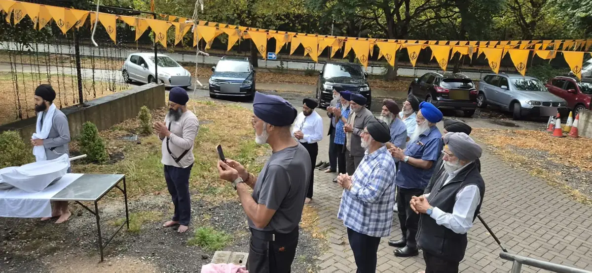

Step 1 · Before work began
An Ardas together
Before a single spade went into the ground, the sangat gathered beside the site for Ardas, asking for Guru Sahib's blessing on the seva ahead.
Karah Parshad was prepared and shared, and the work began in the spirit of humility and togetherness.
